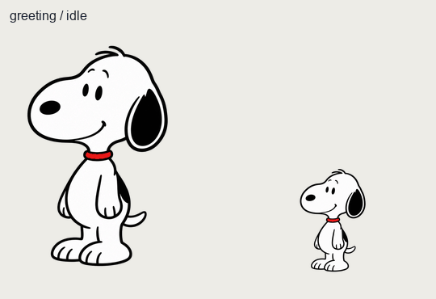
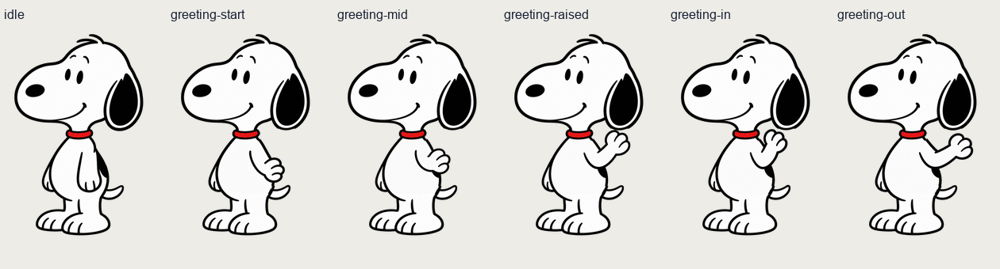
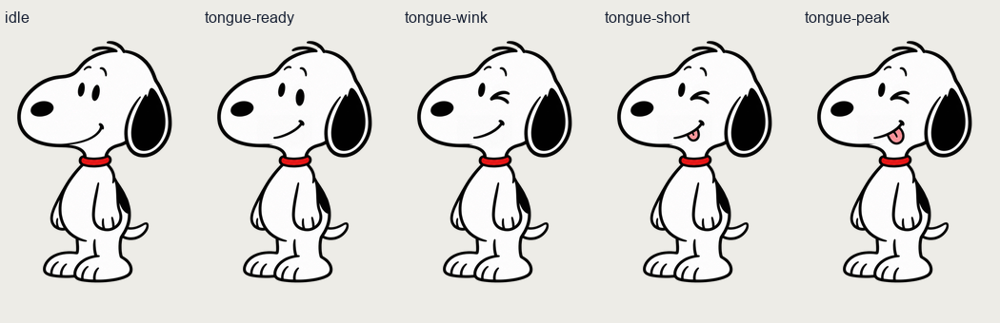
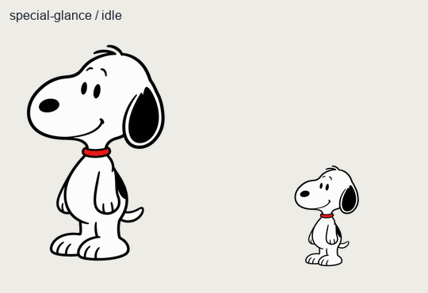
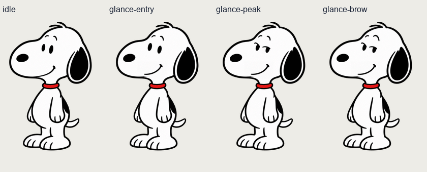
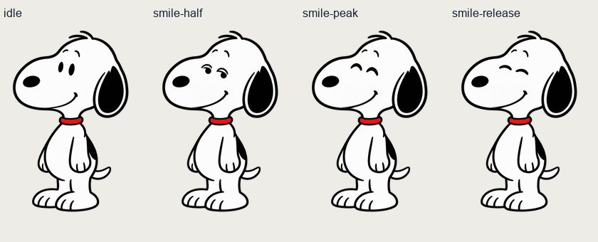

Greeting：统一手型挥手
正常速度

慢速检查 ×3
展开姿势总览

Greeting 新做5张；Special 新增7张，复用3张关键帧，拆成3组。另保留1张未入选过渡。旧版不覆盖，未接入WPF。
验收提示：2026-10-05 用户确认：Greeting及三组Special全部通过。旧版和未入选图保留；尚未接入WPF程序。
下方有正常速度、慢速3倍及逐帧检查。逐帧时重点看手型、肘部路径和表情是否只改变预定部位。浅色/深色背景可切换。





